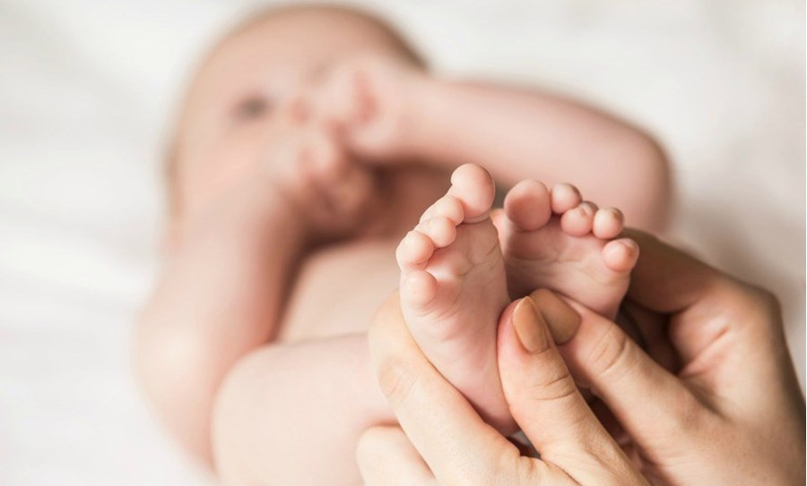

Parenfant


Le contact physique a été reconnu comme vital pour le nouveau-né et le jeune enfant. Le contact
permet à l'enfant de grandir en ayant conscience de son corps et du corps de l'autre, de développer ses sens, des liens d'attachement,
d'apprendre les limites de son corps, les limites du toucher.
Il est important d'apprendre à l'enfant dès son plus jeune âge la différence entre le toucher
sain et malsain, ceci participe également à la prévention des agressions physiques et sexuelles.
De part ces ateliers, vous pourrez découvrir et pratiquer le massage de l'enfant en fonction de son âge et découvrir des techniques
permettant de soulager certains maux.
Votre enfant et vous en ressortirez apaisés!!!
Cliquez ici pour vous inscrire dans votre région